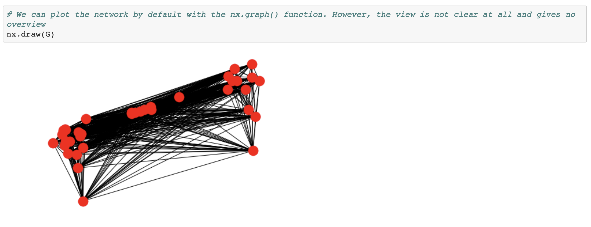
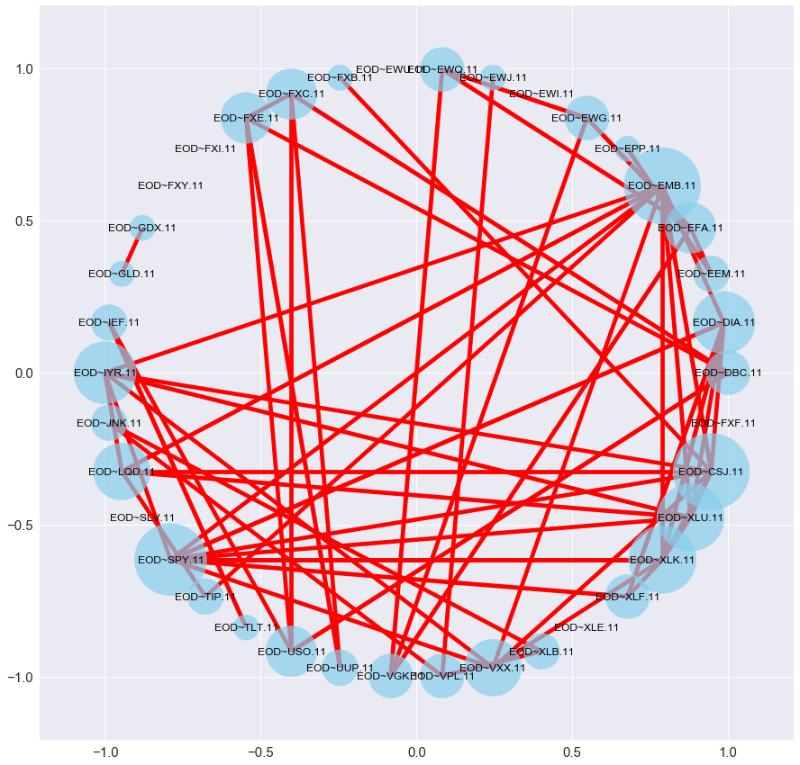
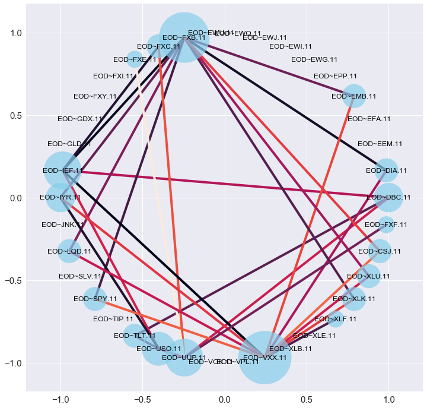
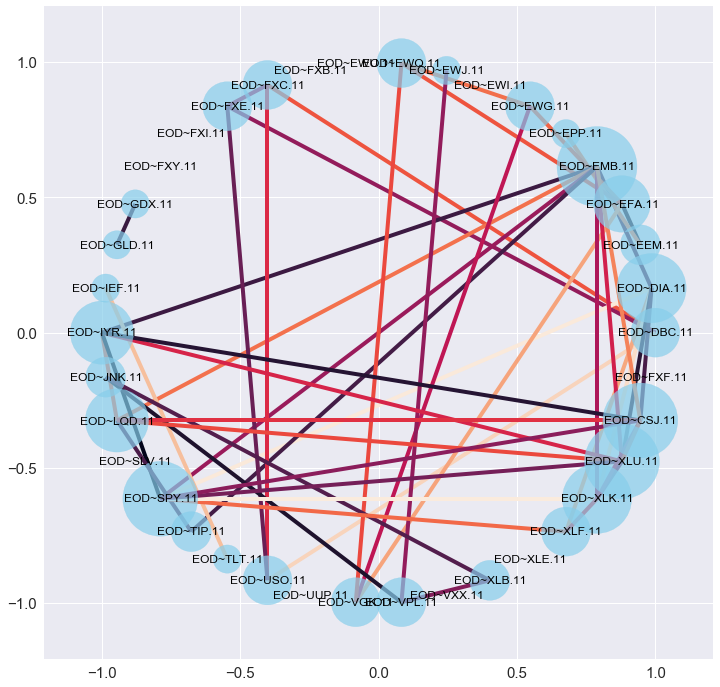

PROJECT OVERVIEW
This project looks at the price movements of a set of assets, and represents the correlation of price movements of the assets as a network to help identify risk and find correlation to lagged asset prices for investing. Stocks that behave similarly are positively correlated, while the ones that behave differently are negatively correlated.The main issue with this tasks is that the dataset consists of too many stocks and a standard network visualization creates a visual clutter preventing the derivation of insights. This is clearly observed in the below standard representation readily provided by NetworkX package:  Hence, it is important to experiment with the different graph layouts, choose the best, and then enhance your plot by representing the thickness of the edges and size of the nodes to give some insight. To achieve this, I create two functions that do the following:
- Function 1: "visualize" This function will create a copy of the graph and filter for a minimum absolute correlation, so that it allows the user to input a minimum correlation they are interested in. It will remove the pairs of assets with correlation smaller than the minimum one. Moreover, it will remove the edges between an asset and itself, as they have correlation 1, which would skew results when we set the node size based on degree. Then it will create a list according to which the sizes of the nodes will be adjusted based on their degree in the new graph. This means that nodes with more edges (so the ones that appear in more asset pairs with high absolute correlation will have a bigger size). The edges of the graph will be thicker when the absolute value of their weight(the correlation) between the two nodes(assets) is larger. In this way, we can understand which the most correlated pairs of assets are. Thanks to the node size, we can also understand which asset appears in the most pairs with correlation above the desired absolute minimum one. This will allow to analyze in terms of portfolio mix. 
- Function 2: "visualize2" This function optimizes the first one by letting the user look separately at negatively correlated pair and positively correlated ones. This is important when choosing optimal portfolio mix. Moreover, instead of visualizing how big the absolute correlation is through edge width, it does so through edge color, which I think is clearer. Example of assets that behave very differently (with correlation less than -0.8) with edge colors varying according to absolute correlation where lighter colors show correlation closer to -1  Example of assets that behave very similarly (with correlation above than 0.9) with edge colors varying according to absolute correlation where lighter colors show correlation closer to 1 
CONCLUSIONS
The visualization of stock movements correlations can be very beneficial for investors who want to distribute risk. However, such data is often way too heavy to be handled with in-built visuals. Hence, we need to extract only the information that is valuable for the decisions we are facing. With different channels such as node size, edge width and color, we can further improve our graphs, avoid visual clutter and take data-driven actions.
- © Rada Georgieva
- Design: HTML5 UP